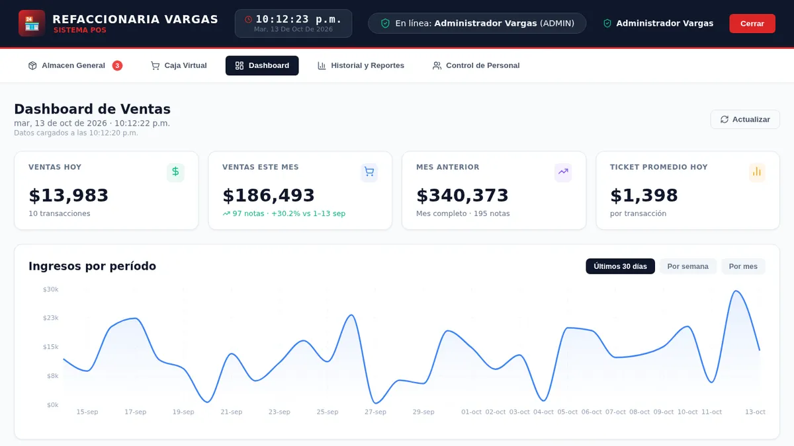
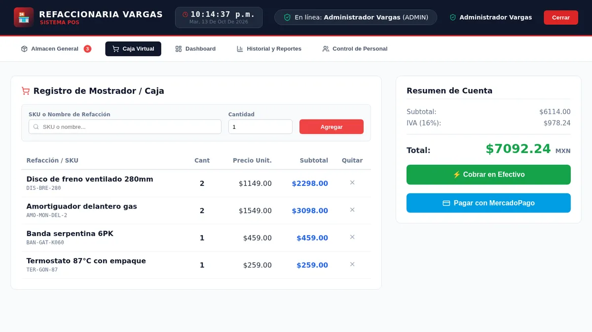
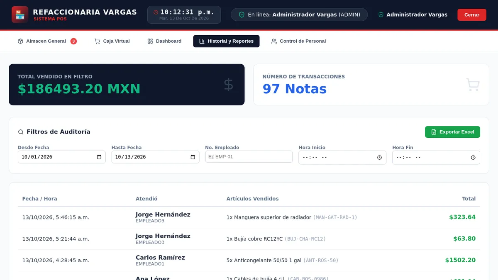

Cloud POS & ERP multi-tenant
Punto de venta e inventario en la nube para refaccionarias y comercios. Varios negocios comparten la plataforma con sus datos aislados, cobran a sus clientes con MercadoPago y pagan una renta mensual por usarla. Está en producción, con una demo pública que se reinicia cada noche.



Problemas que resolví
- Aislamiento entre negocios. Un middleware identifica el negocio en cada petición, el token solo vale para su propio negocio y todas las consultas filtran por él. Detecté y eliminé un índice único global de SKU que impedía que dos negocios registraran el mismo producto.
- Pagos con MercadoPago. Checkout Pro con confirmación por webhook, así la venta se completa aunque el cliente cierre la ventana. Las ventas pendientes expiran a los 30 minutos.
- Suscripción del negocio. Vigencia, periodo de gracia y bloqueo con HTTP 402 cuando vence la renta.
- Seguridad. JWT, roles de administrador y vendedor, contraseñas con bcrypt y límite de peticiones por IP.
- Operación. Backend en Render, frontend en Netlify y MongoDB Atlas. CI en GitHub Actions y un job nocturno que regenera la demo pública.